Manual do Aluno
Guia completo para utilizar o SIGE Portal Escolar e o Aplicativo Mobile — voltado para alunos matriculados.
1 Acessando o Portal Escolar
Para acessar o Portal Escolar, abra seu navegador e vá até a página de login do SIGE. Utilize seu CPF (ou número de matrícula) e a senha fornecida pela secretaria no ato da matrícula.
Caso ainda não possua cadastro, você será redirecionado ao Portal de Inscrição para realizar sua inscrição inicial.
2 Dashboard
Após o login, você verá o Dashboard com um resumo das suas informações acadêmicas: cards com a quantidade de disciplinas cursadas, média geral, próximos eventos e avisos importantes.
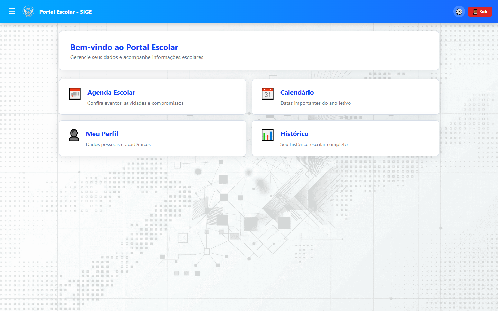
3 Meu Perfil
No menu Meu Perfil você pode editar seus dados pessoais (e-mail, telefone, endereço), alterar sua foto e trocar sua senha.
- Editar dados: Altere informações como telefone e endereço.
- Upload de foto: Envie uma foto recente (formatos JPG ou PNG).
- Alterar senha: Informe a senha atual e a nova senha desejada.
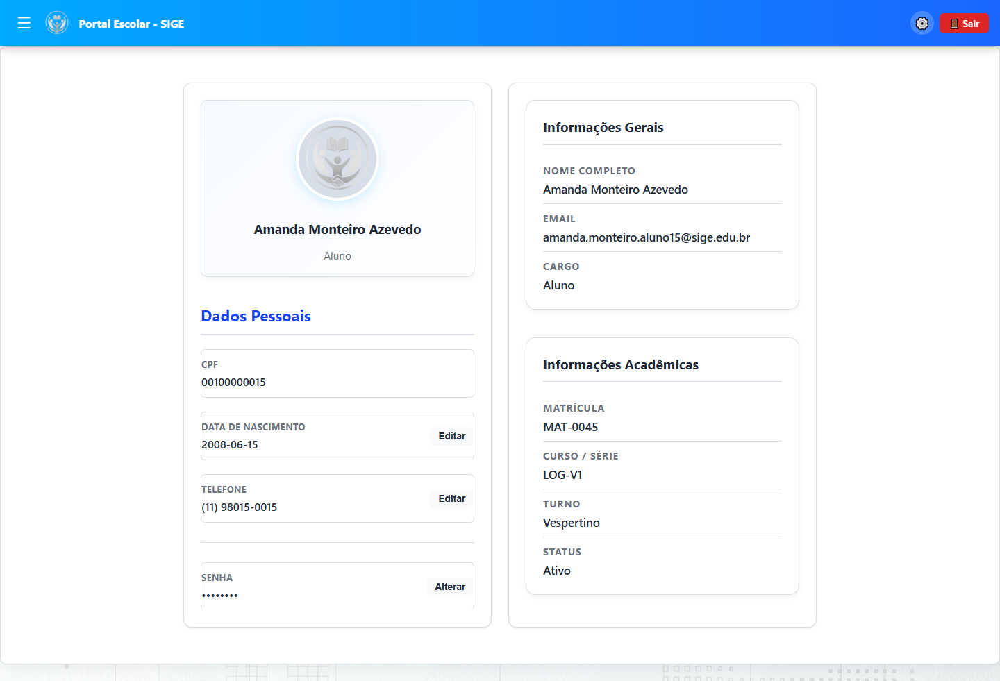
4 Consultando Notas e Frequência
O Portal Escolar oferece três formas de acompanhar seu desempenho acadêmico:
Histórico Escolar
Exibe todas as disciplinas já cursadas com as notas finais, situação (aprovado/reprovado) e período letivo.
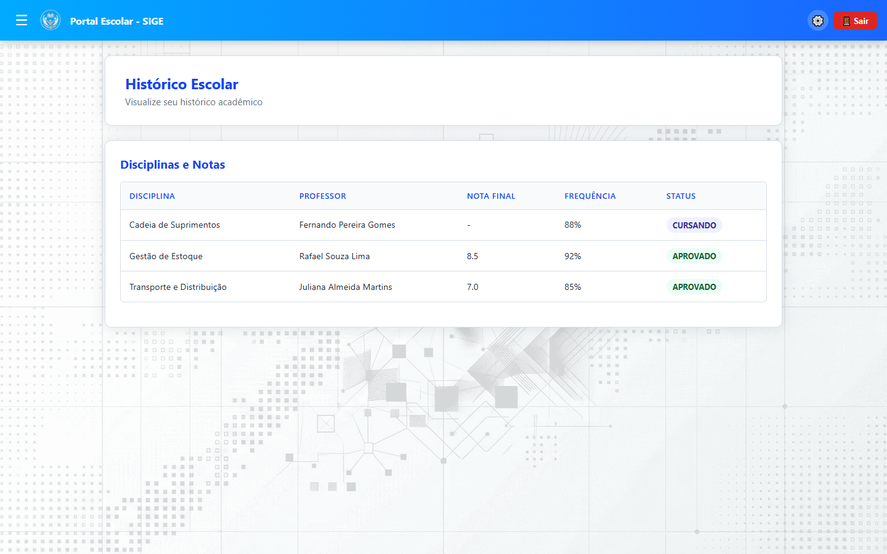
Estrutura Curricular
Visualize a matriz curricular do seu curso organizada por semestre, com o progresso de cada disciplina e os pré-requisitos.
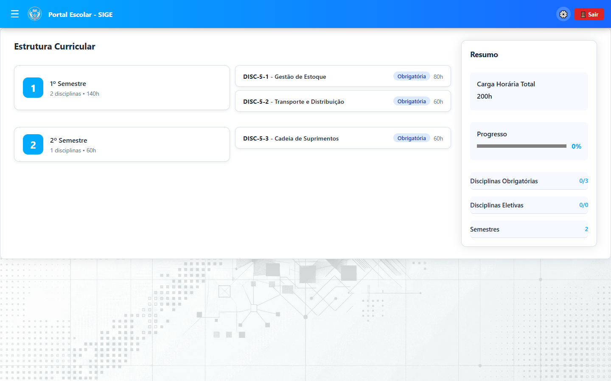
Frequência
Acompanhe a frequência por disciplina, com o percentual de presenças e faltas registradas ao longo do semestre.
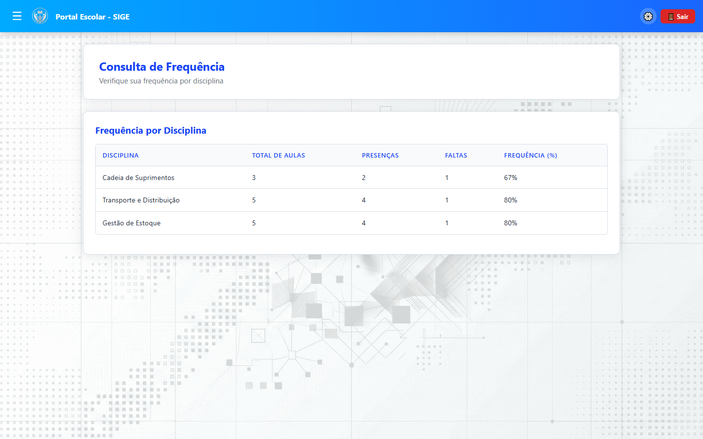
5 Quadro de Horários
O Quadro de Horários exibe sua grade semanal com as disciplinas, horários, salas e professores. Use essa tela para se organizar ao longo do semestre.
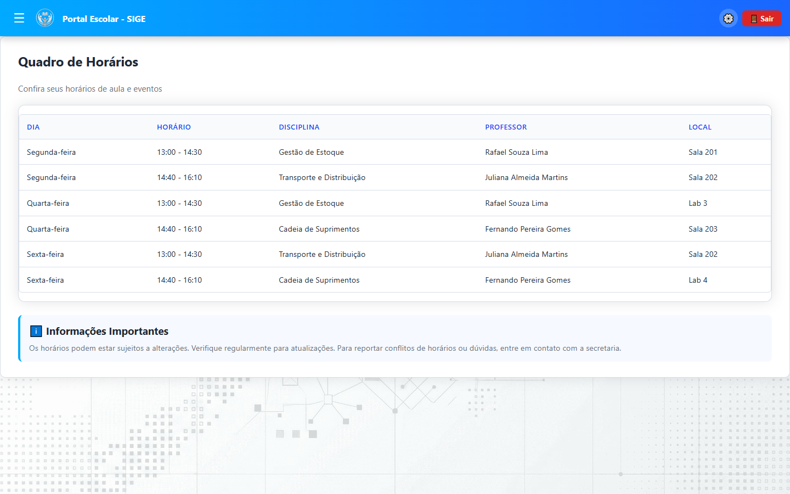
6 Calendário e Agenda
Calendário Escolar
Consulte as datas importantes do ano letivo: início e fim de semestre, feriados, recessos e períodos de matrícula.
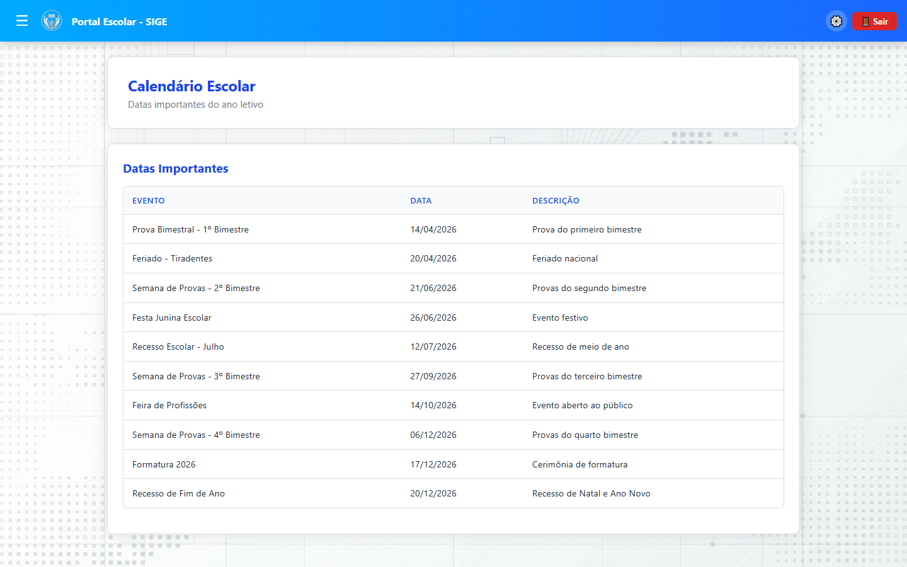
Agenda Escolar
A Agenda Escolar lista os próximos eventos acadêmicos, provas, entregas de trabalhos e atividades agendadas.
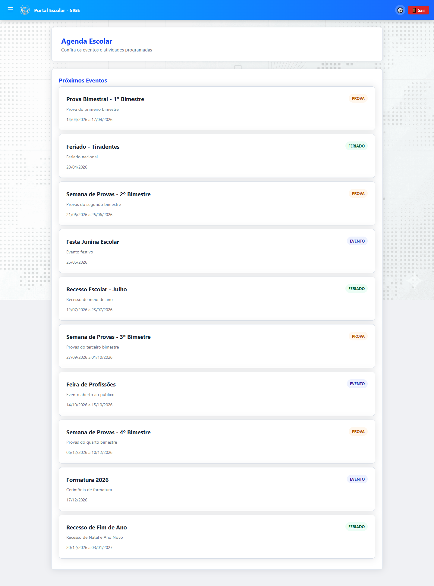
7 Atendimento Agendado
Solicite agendamentos de atendimento com a secretaria, coordenação ou professores. Escolha o setor, o profissional e o horário disponível.
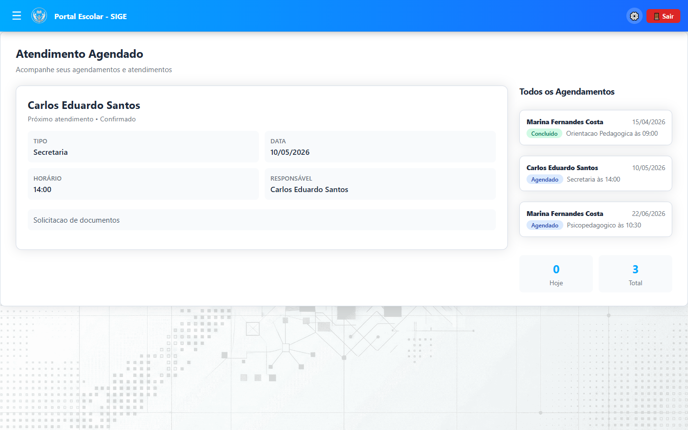
8 Documentos
Na seção Documentos você pode visualizar e baixar documentos escolares como declarações de matrícula, históricos, boletos e certificados.
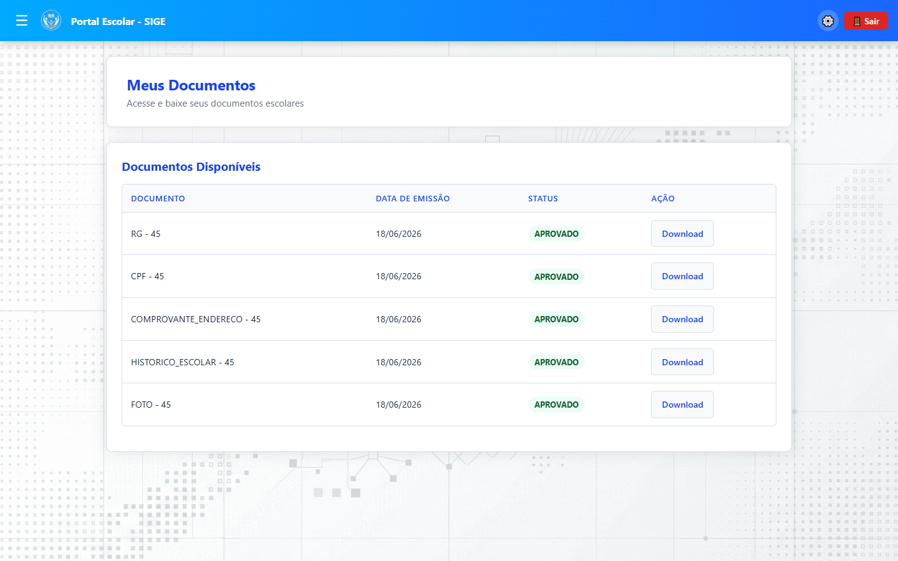
9 Reclamações e Ouvidoria
Lista de Reclamações
Acompanhe o status das suas reclamações já registradas. Cada solicitação exibe o número de protocolo, data, descrição e situação (aberta, em andamento, resolvida).
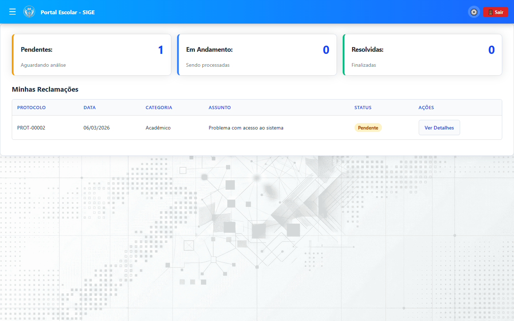
Nova Reclamação
Registre uma nova reclamação ou sugestão através do formulário de ouvidoria. Informe o assunto, a descrição detalhada e anexe arquivos se necessário.
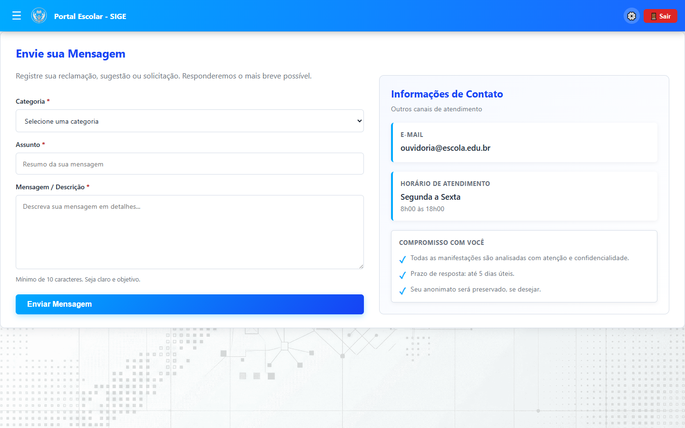
10 Aplicativo Mobile
O SIGE também está disponível como aplicativo mobile para alunos, desenvolvido em React Native (Expo). Com ele você pode:
- Visualizar notas e frequência
- Consultar o quadro de horários
- Acessar o calendário e agenda escolar
- Editar o perfil e alterar a foto
- Agendar atendimentos
- Emitir declarações e documentos
- Acompanhar reclamações
- Receber notificações push
O aplicativo está disponível para dispositivos Android e iOS. Consulte a secretaria para obter o link de download ou acesse a seção Aplicativo Mobile na documentação.